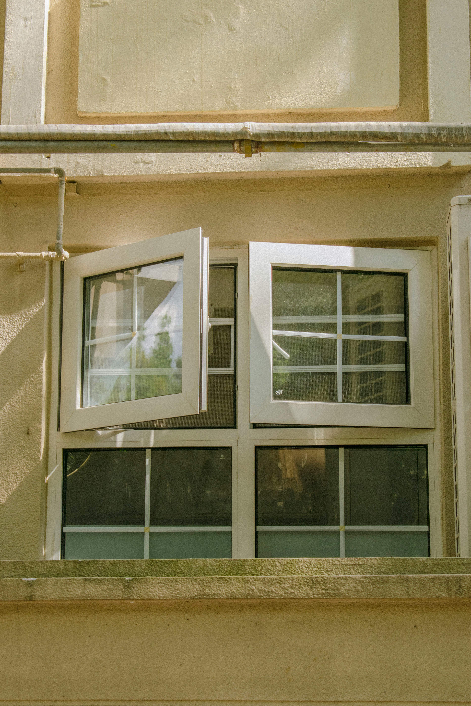
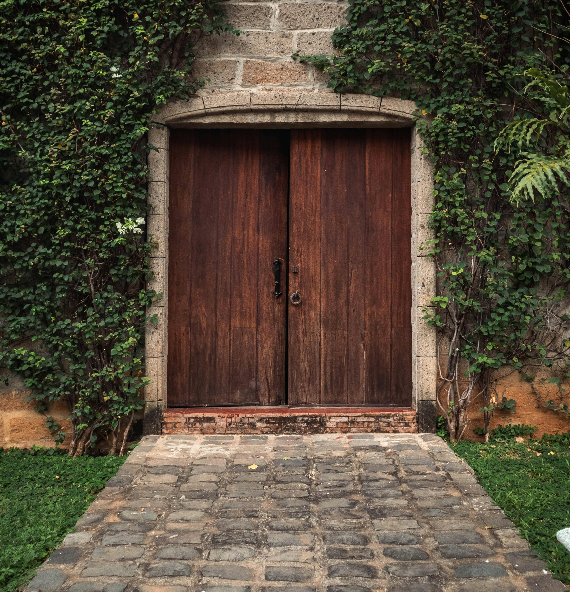
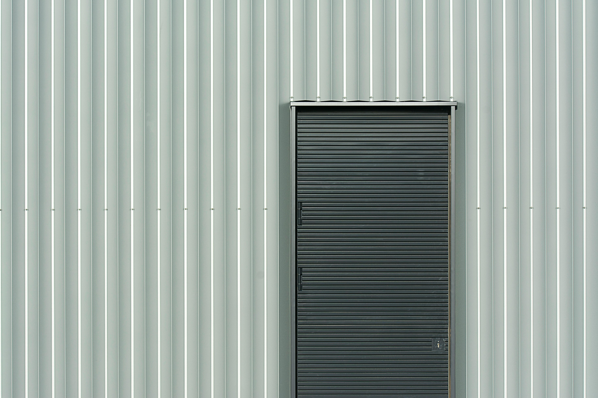

Stylish & Functional Installations
JA2K provides quality aluminium, timber, and metal door and window solutions designed to improve security, durability, and visual appeal.
Aluminium Windows
Our aluminium window solutions provide modern finishes, durability, and long-term performance for different environments.
- - Modern aluminium designs
- - Durable and weather-resistant finishes
- - Residential and commercial installation

Wooden Doors
We provide elegant wooden door installations that combine security, style, and functionality for interior and exterior spaces.
- - Interior and exterior doors
- - Decorative modern finishes
- - Strong and reliable materials

Metal Doors
Our metal door solutions offer additional protection, durability, and modern designs suitable for different properties.
- - Secure metal door systems
- - Strong and durable finishes
- - Residential and commercial applications

Need Doors or Window Solutions?
Contact JA2K for durable and stylish door and window installations.
CONTACT US